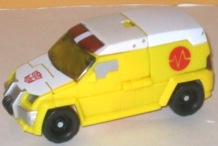
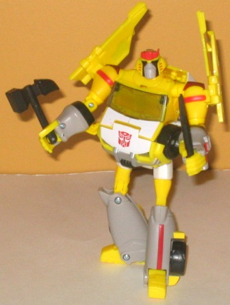
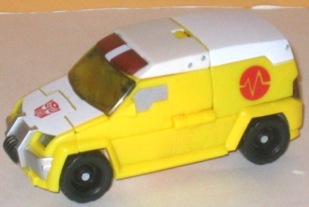
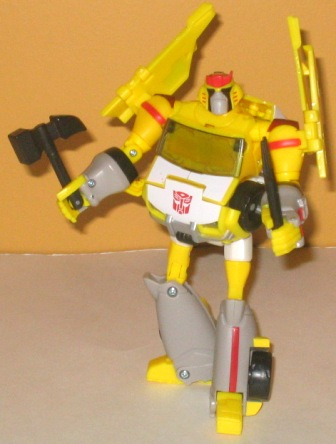

 
Allegiance: Autobot
Size: Deluxe
Difficulty of Transformation : Medium
Color Scheme : White, bright yellow, and some red, silver, moderately light pasty gray, clear tinted plastic, black, and transparent dull red
Rating : 7.8
Set Price : $15 U.S.
(NOTE: Legends class
Prowl
and
Starscream
are the exact same
as their Universe Animated Legends toys, so check out the reviews of those
toys in the links above for the full scoop on those pack-ins.)
 Ratchet
(Rescue)
Ratchet
(Rescue)


Allegiance:
Autobot
Size:
Deluxe
Difficulty of Transformation
: Medium
Color Scheme
: White, bright yellow,
and some red, silver, moderately light pasty gray, clear tinted plastic,
black, and transparent dull red
Rating
: 7.8
(NOTE: Because this is a repaint, this is not a full-blown review. This mainly covers any changes made to the mold and the color scheme, and merely compares it to the original Animated deluxe Ratchet. For a review on the mold itself, read the review of the original Animated deluxe Ratchet here .)
Ronald McRatchet, anyone?
From the moment this repaint was revealed, fans pointed out the color scheme's
uncanny resemblance to Ronald McDonald, and it's pretty darn accurate.
White and a somewhat loud yellow are Rescue Ratchet's main colors, with
red and gray forming the accent colors. I have to say, beyond the comedic
resemblance, this is a pretty darned ugly color scheme. It's almost all
bright-- the yellow obviously isn't dull enough to offset the white, and
the gray is light enough where it doesn't really work as a dark contrast
color either. The red serves as a nice color-wheel contrast color, but
it's only used a little bit, and not nearly enough to make all those light
colors look good. Same goes for the black wheels and tinted transparent
plastic. I do rather like the red stripes down the arms and legs of the
robot mode, though-- it gives Rescue Ratchet a bit more individuality when
it comes to paint apps.
No mold changes have
been made to Rescue Ratchet.
Rescue Ratchet is a
decent enough mold, but the colors he comes in this time around are horribly
loud and, even though they may be somewhat fitting for an emergency vehicle,
still don't look good. The immediate resemblance to Ronald McDonald doesn't
help, either-- unless you absolutely can't find the original Animated Ratchet
toy anywhere or can't find the Animated Legends Prowl & Starscream
figures anywhere else, I'd recommend skipping this exclusive.
Review by Beastbot